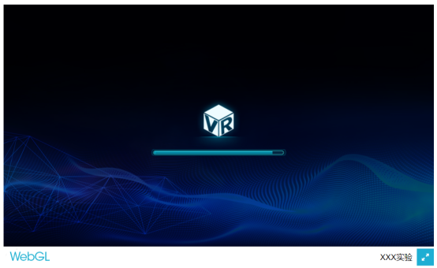
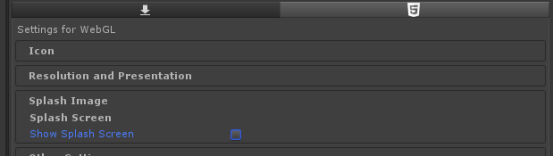
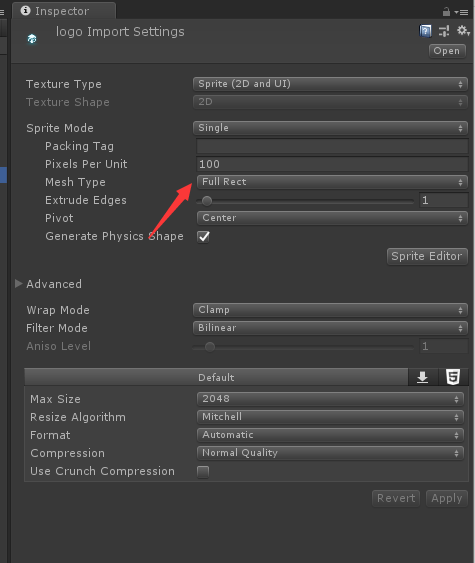
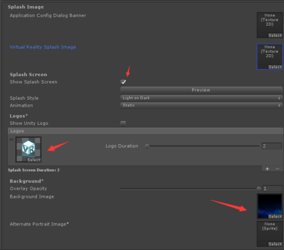
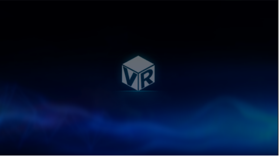
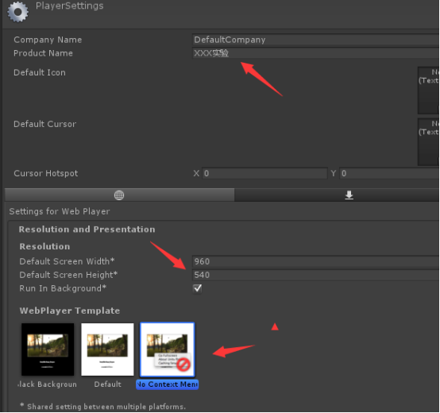
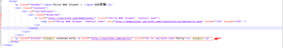
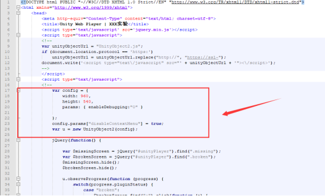
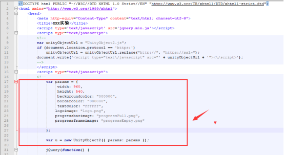
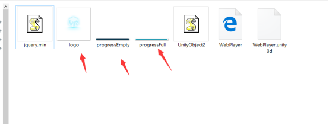

文章中提到的pcIamge、WebGLTemplates、WebplayerImage资源文件夹请前往公司git资源库下载
链接地址 下载Unity打包Logo.rar
WebGL设置Logo
拷贝WebGLTemplates到Assets目录下

设置实验名称
选择File->Build Setting->PlayerSettings,在Product Name中填入实验名称

设置统一实验分辨率
选择Resolution and Presentation
填写分辨率为960*540
选择RainierTemplate

设置加载背景图
进入Assets\WebGLTemplates\RainierTemplate\TemplateData文件夹，替换下列文件为目标文件即可
- bg-Image.jpg：为目标背景图
- progressEmpty.Dark.png：加载进度条边框
- progressFull.Dark.png：加载进度条
- progressLogo.Dark.png：加载logo
默认效果图：

去掉show Splash Screen选项

Windows设置Logo
选择File->Build Setting->PlayerSettings
设置实验名称和ICON

设置分辨率为1920*1080
填写实验名称，选择PcImage文件夹下的Icon.png

Logo图片导入设置
设置Mesh Type为Full Rect

选择Splash Image
- 勾选show Splash Screen
- 设置logos列表图片:PcImage文件夹下的logo.png
- 设置Background Image:PcImage文件夹下的bg-Image

设置完成效果图预览

WebPlayer设置Logo
设置实验名称和分辨率

设置完成后直接打包生成可执行文件
修改打包完成后的index.html文件
- 删除Unity Web Player 文字，只保留实验名称

- 删除标签以及Unity WebPlayer文字，只保留实验名称

- 删除底部p标签这一行，即Create with unity字样

- 找到如下图示的代码部分，删除这部分代码，在删除的代码部分，添加如下代码

var params = {
width: 960,
height: 540,
backgroundcolor: "000000",
bordercolor: "000000",
textcolor: "FFFFFF",
logoimage: "logo.png",
progressbarimage: "progressFull.png",
progressframeimage: "progressEmpty.png"
};
params["disableContextMenu"] = true;
var u = new UnityObject2({ params: params });替换后

添加资源文件
- 将打包logo设置文件夹中的WebplayerImage文件夹下的logo、progressEmpty、progerssFull三张图片拷贝到打包文件夹下

- 示意图